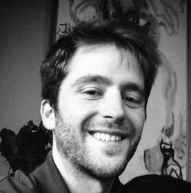

<!DOCTYPE html>
<html lang="ja">
<head>
	<!--[if lt IE 9]>
		<script src="http://html5shiv.googlecode.com/svn/trunk/html5.js"></script>
	<![endif]-->
	<meta charset="UTF-8">
	<title>backspace to enterkey::backspacetokyo ⌫</title>
	<meta name="keywords" content="backspacetokyo, backspace, satoruhiga, motoishmz, 2bit">
	<meta name="description" content="backspacetokyoに訪れたアーティスト/デベロッパー/ハッカーを囲んで話をしたり、交流する事を目的にしたイベント。">
	<meta name="robots" content="index,follow">
	<meta name="format-detection" content="telephone=no">
	<meta name="viewport" content="width=device-width">
	<link href="./enterkey.css" rel="stylesheet" type="text/css">
	<link href="./enterkey.mobile.css" rel="stylesheet" type="text/css">
	<!-- begin og -->
	<meta property="og:title" content="backspace to enterkey">
	<meta property="og:type" content="website">
	<meta property="og:site_name" content="backspace to enterkey">
	<meta property="og:image" content="http://backspace.tokyo/backspace.jpg">
	<meta property="og:description" content="backspacetokyoに訪れたアーティスト/デベロッパー/ハッカーを囲んで話をしたり、交流する事を目的にしたイベント。">
	<meta property="og:url" content="http://backspace.tokyo/enterkey/">
	<meta property="og:site_name" content="backspacetokyo ⌫">
	<!-- end og -->
</head>
<body>

<h1><span>Backspace to</span> Enterkey</h1>
 

<p class="slogan">
	backspacetokyoに訪れたアーティスト/デベロッパー/ハッカーを囲んで話をしたり、交流する事を目的にしたイベント。<wbr>
	既にonlineに上がっているプロジェクトの紹介プレゼンテーションでは無く、今取り組んでる事や過去のプロジェクトにどんなトライアンドエラーや想いがあったか等をフランクめに話してもらう+その後フリータイム、というイベントです。<wbr>
	ゲストが来日したタイミングで適宜開催されます。
</p>

<hr/>

<ul class="guests">
	<li>
		<span class="tags">
			#1: May 20th, 2015 - @ Kingyo, Ebisu
		</span><br>
		<a href="./1/">
			Jonathan Dahan <span class="aka">@jedahan</span><br>
			Jordi Puig <span class="aka">@wasawi</span>
		<span class="avatars">
			
			
		</span>
		</a>
	</li>
</ul>


<hr/>

<footer>
	Organized by <a href="../en">backspacetokyo</a>
</footer>
</body>
</html>